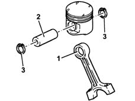
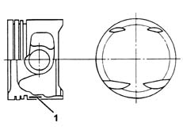

DESCRIPTION OF COMPONENTS
- Path
- Descriptions > 10 ENGINE > 1028 PISTONS AND CONNECTING RODS > 1028H PISTONS AND CONNECTING RODS > DESCRIPTION OF COMPONENTS
- Kind
- system description
- Applies to
- engines: 2.4 20V; all production periods
- Interactive page
- https://sloeber94.github.io/elrnDB-lThss/en/#/608131
Applies to: engines: 2.4 20V; all production periods
CONNECTING RODS
Specifications
Type
The connecting rods are made from hardened and tempered steel, with a copper alloy bush (1) fitted for matching with the gudgeon pin (2).
The floating type gudgeon pins are kept in place by two circlips (3) which are housed in the special piston ring grooves.

PISTONS
Specifications
Type
The silicon aluminium alloy pistons with auto-thermal inserts (1) are divided into three classes with an arrow stamped on the piston crown indicating the direction of rotation of the engine so that they can be correctly fitted.
The piston crown is concave and has four notches designed to prevent interference with the valve heads.
